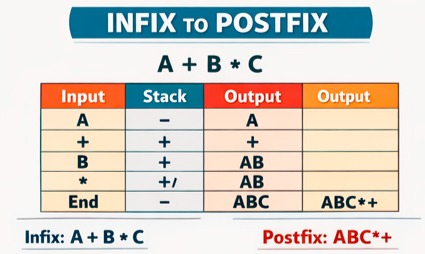

Infix to Postfix
Infix : A + B * C
Ilustrasi

Implementasi Python
def infix_to_postfix(expression):
stack = []
output = []
precedence = {'+':1, '-':1, '*':2, '/':2}
for char in expression:
if char.isalnum():
output.append(char)
elif char in precedence:
while (stack and stack[-1] != '(' and
precedence[char] <= precedence[stack[-1]]):
output.append(stack.pop())
stack.append(char)
elif char == '(':
stack.append(char)
elif char == ')':
while stack[-1] != '(':
output.append(stack.pop())
stack.pop()
while stack:
output.append(stack.pop())
return "".join(output)
print(infix_to_postfix("A+B*C"))
Penjelasan :
Operand (A, B, C) → langsung ke output Operator → masuk ke stack Prioritas: * lebih tinggi dari + Stack dikeluarkan di akhir hasil : Postfix = ABC*+